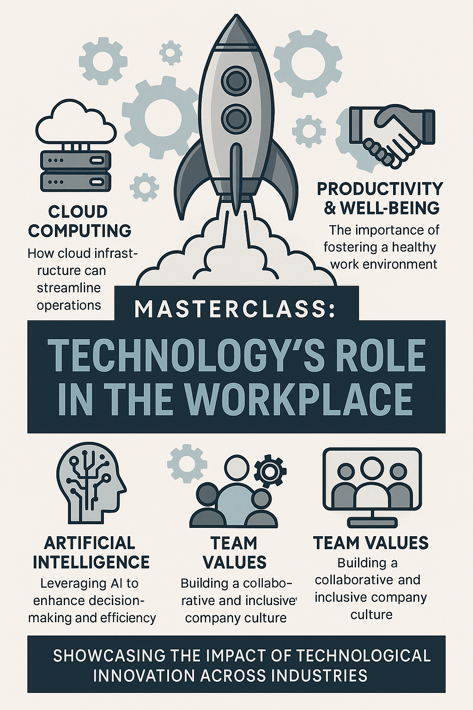
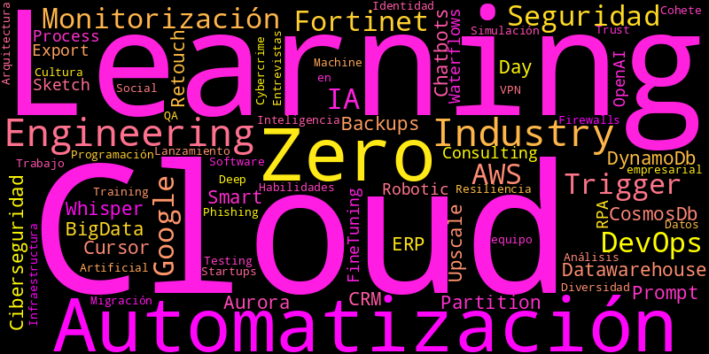

Impulsando el Futuro con Tecnología e Innovación
Las Jornadas Tecnológicas 2025 suponen una oportunidad única para estudiantes, docentes y profesionales del ámbito tecnológico. Durante este evento, se reúnen figuras clave de empresas punteras como Google, Fortinet, PLD Space y otras entidades referentes en sus sectores para compartir su experiencia, aprendizajes y visión de futuro.
El evento no solo muestra herramientas y avances técnicos, sino que promueve una visión integral del sector: desde el valor del trabajo en equipo, la importancia de la empatía en ingeniería, hasta el impacto de la inteligencia artificial, la automatización y el cloud computing en nuestras vidas. Con un enfoque realista y práctico, estas jornadas conectan la educación con el mundo real de la tecnología.
Aprendizaje Real en un Entorno Profesional
A lo largo de las ponencias se abordaron los retos actuales del sector tecnológico: la ciberseguridad frente a amenazas globales, el papel de la inteligencia artificial tanto en el desarrollo como en los ataques informáticos, y cómo las empresas están adaptando sus infraestructuras con soluciones cloud y microservicios. Las jornadas también ofrecieron una mirada humana al sector, valorando la diversidad, la cultura empresarial y el equilibrio entre vida laboral y personal.
Gracias a este evento, los estudiantes descubren qué habilidades demanda el mercado, cómo prepararse para entrevistas en grandes empresas tecnológicas y qué herramientas se están utilizando realmente hoy en día en la industria. Un puente entre la formación técnica y el entorno profesional actual.
Sobre las Jornadas
Las Jornadas Tecnológicas 2025 reúnen a expertos de empresas como Google, Fortinet y PLD Space para compartir su experiencia en IA, Cloud, ciberseguridad, cultura empresarial y desarrollo aeroespacial. Una oportunidad única para el alumnado de FP de conectar con el mundo real de la tecnología y conocer de cerca las herramientas, valores y desafíos del sector.